Mock E · Color Sort · v5 · baseline fun@4fa5fbf
Color Sort — endless-first, a real pour, sign-in
Eight proposals for one game, to be talked through before a line of production code: how Color Sort opens, how a pour looks and sounds in each of its three skins, where the Daily lives before and after the fifth solve, and what signing in buys. Everything sits inside the shipped game frame. Plan: plans/2026-08-29-plan-color-sort-redesign.md (decisions D1–D12 settled 2026-08-29).
Revisions
v5 — phases C and D shipped (endless first with the locked Daily and the record; sign-in on the shelf, the record bound to the DID); captures re-taken from fun@4fa5fbf, with a solved-level result carrying the offer and the open sign-in sheet beside proposal 6.
v4 — phase B shipped (the pour in three skins, pour speed, sound, the completion beat, the bolt skin as a bolt); captures re-taken from fun@1452290, and a new Shipped mid-pour capture stands beside proposal 3.
v3 — phase A shipped (frame as drawn: three meters, the dock in the mock's order, 48px tubes); the captures are re-taken from fun@bac0c55 and stand as Shipped beside proposals 1, 2 and 7. The v1 captures (fun@d6c0813, the pre-frame game) remain as Before in snaps/before/.
v2 — the bolt skin redrawn as a threaded bolt with a base plate (owner: nuts screw and unscrew; they were drawn as a tube of hexagons); the pour choreography for bolts is now unscrew → carry → screw down. Adds e-color-sort.claims.json, the parity contract (§ "Does the build match the mock?").
v1 — first draft, branch claude/color-sort-redesign. Captures: snaps/color-sort.* from fun@d6c0813 via tools/mock-snaps.mjs (added on this branch).
Open decisions
| # | Question | This draft shows | Standing |
|---|---|---|---|
| Q1 | Pour timings — 120 / 200 / 160-per-unit / 200 ms are Decanta's measured numbers. Right on a phone? | those numbers, looping in proposal 3 | tune on device a preference row makes the pick reversible |
| Q2 | Twelve tubes at 390px — two rows of six at 48px (drawn) or one scrolling row? | two rows; the bottom row's lips sit 30px under the top row's bases so a tilted tube clears them | open |
| Q3 | Where the "N to go" counter lives before the gate — only in the locked Daily row, or also on the poster? | the row only; the poster stays clean until the chip earns its place | row only |
| Q4 | The sign-in offer's copy after the first solve | "Keep this streak — sign in with your atmo provider" | open — Copy category |
| Q5 | Does the ball skin keep the tube lift while balls hop, or stay put? | a 12px lift for the whole pour (the selection pose held) | open |
The proposals, Current beside Proposed
1 · First land — Endless, level 1, and a locked Daily
Today a bare /color-sort/ is the Daily: twelve tubes, ten colours, par 32, for everyone. Proposed: the frame's poster with the setup card. Mode is Endless; the Daily row is visible and locked with the count to go. Play starts level 1 (4 colours, 6 tubes) — or "Continue · Level 9" when the record holds one.
fun@d6c0813, ?seed=4242 (a bare land was today's daily: the same shape)
fun@4fa5fbf, ?seed=4242 (a deep link mounts the board; the bare land is the poster, which E1.1 proves)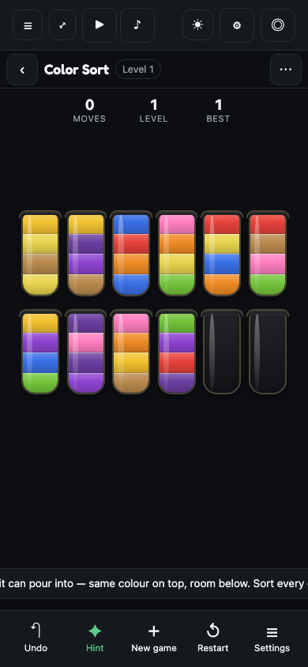
Color Sort
Pour until every tube holds one colour. Tap a tube, tap where it goes.
Color Sort
Pour until every tube holds one colour. Tap a tube, tap where it goes.
2 · Playing — inside the frame, mid-pour
Today: five pills and a disclosure above a text HUD, a board that shifts when the deadlock card appears. Proposed: meters in band ③ (Moves · Level · Best), the board alone in the stage, four verbs in the dock. The pour is frozen here at the stream phase; proposal 3 has it moving. Tubes are 48px — above the 44px floor (today's are 43).
fun@d6c0813, tube 1 selected, legal targets ringed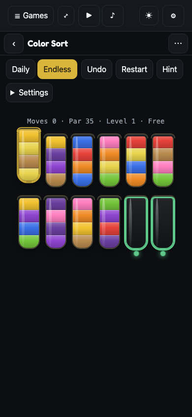
fun@4fa5fbf after phase A: the frame, three meters, the dock, 48px tubes (the pour is phase B)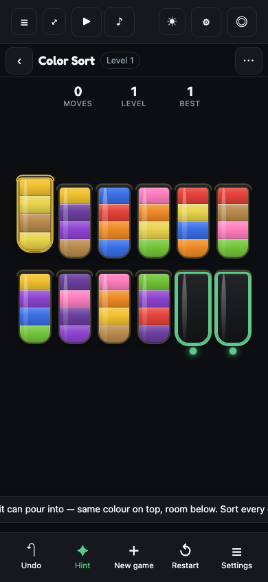
3 · The pour — moving, in all three skins
One engine, one move, three choreographies (D2: "let's go all out"). Water: lift 120ms → travel and tilt about the lip 200ms → stream while the units leave and arrive at 160ms each → return 200ms; the next tap is accepted during the return. Balls: no tilt — each ball hops an arc, 140ms a ball, and lands with a squash. Bolts: the top nut unscrews — spinning as it rises off the thread — crosses level, and screws down onto the target. Below, the same pour frozen at each phase so a reviewer can point at a frame.
fun@4fa5fbf, mid-pour at Slow (tube 2 → tube 6, 390×844)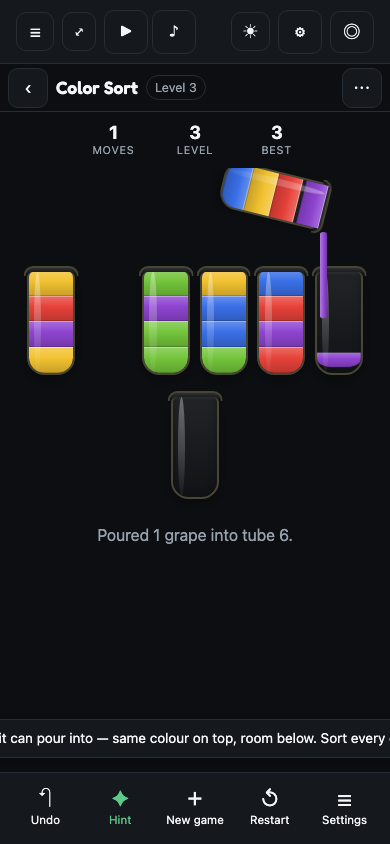
fun@4fa5fbf, mid-pour at 1280×900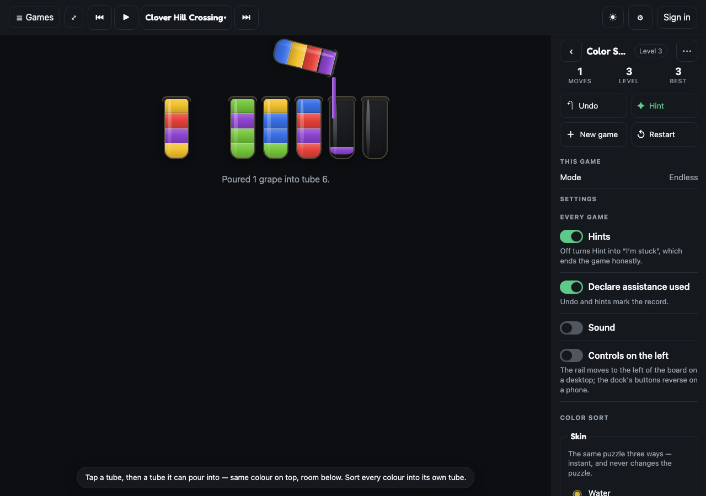
4 · Tube complete, and undo
When a tube fills with one colour the core marks it locked; today the cap simply appears. Proposed: the cap drops on from 26px above, the glass flashes the success green once, a tick rises, and the skin's completion sound plays (a chime for water, a rattle for balls, a clack for bolts). Undo plays the pour in reverse at double speed — a snap that skips instantly reads as a bug.
ui_moves drawn, nothing decided in CSS.5 · Settings — the frame's sheet, with a pour-speed row
Today: a <details> that opens in flow above the board. Proposed: the frame's settings sheet — Every game first, then Color Sort's rows. New: Pour speed (D3). Off is the reduced-motion path; the OS setting selects it until the player overrides.
Every game
Color Sort
6 · After the first solve — the result, and the sign-in offer
The verifiable result stays as it is (the shelf's differentiator). New, below it and only after a solve: the offer. Wordle's order — play, solve, stats, then "keep this". Signing in binds the local record to a DID (D9); it publishes nothing yet. The sheet is croft-pwa's "Choose your atmo provider", all eight rules, in the shelf header for every game (D8, D10).
fun@4fa5fbf: level 1 solved, the offer under the verifiable result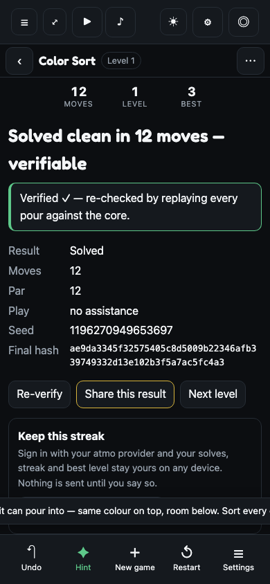
fun@4fa5fbf: the atmo-provider sheet, open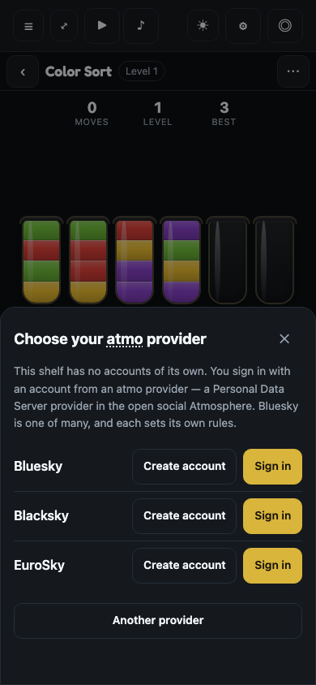
Solved clean in 7 moves
✓ Verified — replayed every pour against the core- Level
- 1 · 4 colours
- Play
- no assistance
- Solves
- 1 · Daily unlocks after 5
- Final hash
- 3f9a…c21e
Sign in with your atmo provider and your solves, streak and best level stay yours on any device. Nothing is sent until you say so.
Choose your atmo provider
An atmo provider is the server that keeps your account. Pick one you could join now, or find yours.
Another provider
Color Sort
Pour until every tube holds one colour. Tap a tube, tap where it goes.
fun@4fa5fbf, the result with the offer at 1280×900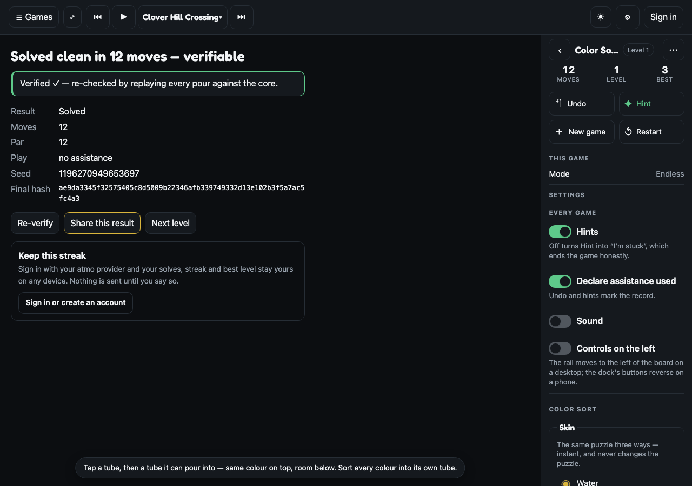
fun@4fa5fbf, the sign-in sheet at 1280×900 (a centred dialog with the room a desktop has)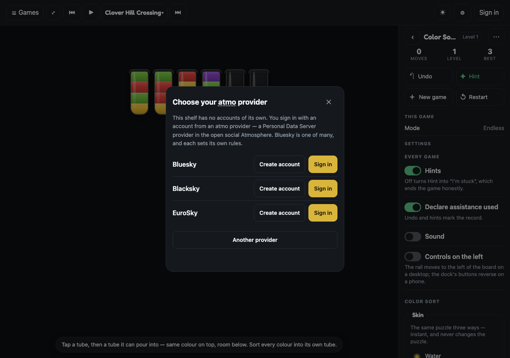
7 · Desktop — the rail
Today: "mobile, stretched". Proposed: the frame's rail at ≥900px — meters stacked, verbs in a two-column grid, This game read-only (Mode, Level, Look), then Settings inline. Twelve tubes fit one row at 56px.
fun@d6c0813 at 1280×900
fun@4fa5fbf at 1280×900 after phase A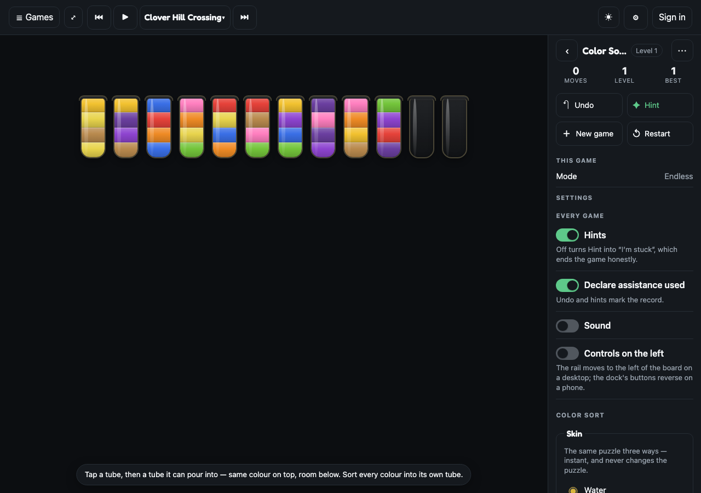
fun@4fa5fbf, tube 1 selected, 1280×900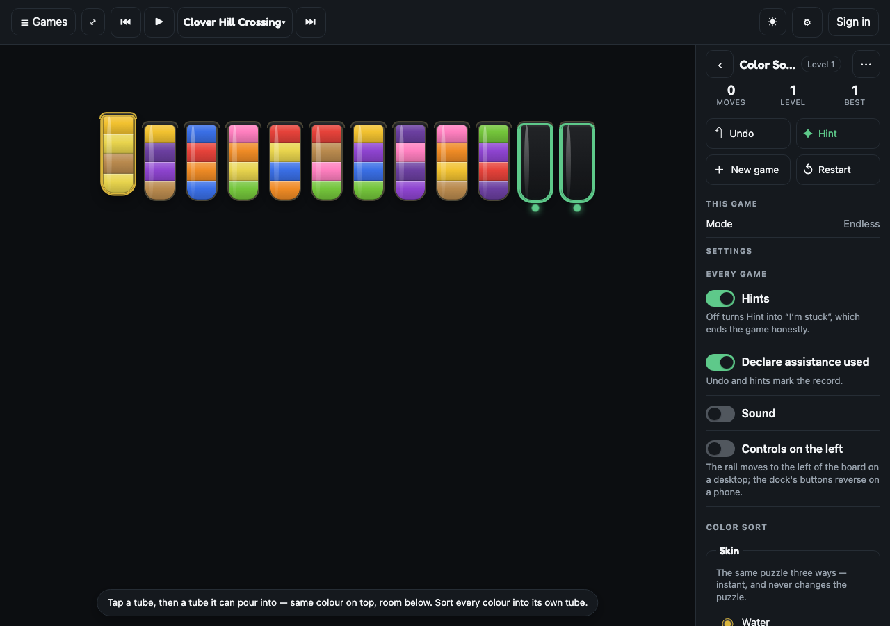
This game
Settings
8 · Sound — three timbres, one preference
Synthesised in Web Audio (D11): zero bytes, unlocked on the first tap. Water: four 80ms sine blips 200–500Hz during the stream, a 400→150Hz plop at settle. Balls: a short clink per landing, pitch rising with the slot. Bolts: a ratchet while the nut turns, a clack when it seats. Tube complete: a two-note chime in every skin. The frame's Sound row governs all of it; the music bar is untouched.
Does the build match the mock?
Every promise on this page that a build could fail to keep is a row in e-color-sort.claims.json — 30 claims, each naming the exact title of the test that proves it and the phase that builds it. tests/mock-parity.test.ts (in the gate) refuses a plan Status that calls a phase COMPLETE while one of its claims has no wired spec, and refuses a claims file whose timings differ from the numbers on this page. After each phase the shipped surface is re-captured with tools/mock-snaps.mjs and stands here as Shipped beside Proposed. Full mechanism: the plan, § "Does the build match the mock?".
Mapping to code
| Proposal | Where it lands | Phase |
|---|---|---|
| 1 · Poster, setup card, locked Daily, the chip | registry.ts (pitch, setup factory) · color-sort.ts GameFrameSpec.setup · the record's played | A, C |
| 2 · Meters, dock, deadlock toast | color-sort.ts frame.update(); the stability spec (frame plan Pass 3 recipe); .cs-banner deleted | A |
| 3 · The pour, three skins | src/games/color-sort/pour.ts (WAAPI sequence behind a pour() seam; ?fast=1 collapses it for e2e) · styles.css skin variants | B |
| 4 · Complete beat, undo reverse | pour.ts (reverse() on the same animations) · styles.css | B |
| 5 · Settings rows, Pour speed, reduced motion | settings.ts (colorSortPourSpeed; matchMedia default) · GameFrameSpec.preferences | B |
| 6 · Result offer, sign-in sheet, header avatar | src/signin/ + src/atproto/oauth/ ported from croft-pwa · chrome.ts header · src/record.ts (the $type-shaped local record, substrate seam) | D (own PR), C |
| 7 · Desktop rail | free with A — the frame reflows the same spec | A |
| 8 · Sound | src/games/color-sort/sound.ts (Web Audio, gated by the frame's Sound row) | B |